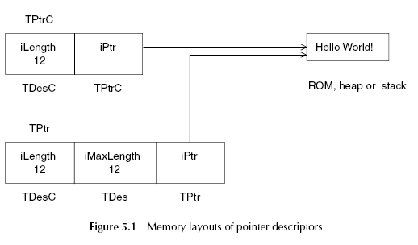
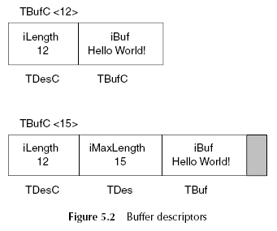
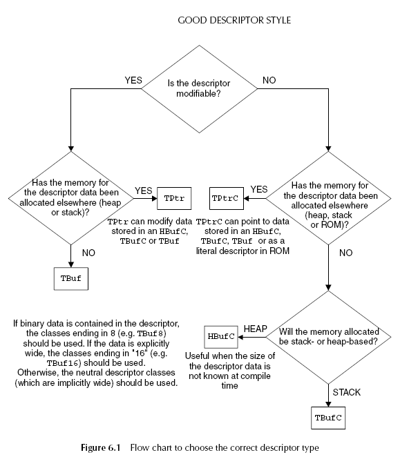

Symbian Strings
a string in symbian is knowsn as "descriptor" - it is self describing.
A descriptor holds: 'length' and the 'type' which identifies the
underlying memory layout of
the descriptor data.
The key point to remember is that they were designed to be very
efficient on low memory devices, using the minimum amount of memory
necessary to store the string, while describing it fully in terms of
its length
and layout.
What they
are and how they work
First there is a difference between descriptors
and literals.
Literals can be build into the program binaries in ROM, because they
are constant.
Literals are
treated differently.
Descritpros have a "property" - width
of the string data - which is whether an
individual character is 8 or 16 bits wide.
Non-Modifiable Descriptors
All the classes that derive from "TDesC" become non-modifiable
descriptors.
TDesC - provides methods to check the length of the descriptor and to
access its data.
In addition, it implements all the operations you’d typically expect to
perform on
a constant string.
Modifiable Descriptors
All the classes that derive from
"TDes" become modifiable descriptors.
TDesC - provides methods you’d
typically expect to perform on a string.
Pointer Descriptors
The string data of a pointer descriptor is separate from the
descriptor
object itself and can be stored in ROM, heap or stack. The memory that
holds
the data is not ”owned” by the descriptor and is not managed through it.
(o) If it is on the heap, the memory is created, reallocated if
necessary,
and destroyed using a heap descriptor pointer
"HBufC".
(o) If a pointer descriptor is referencing a stack-based string, the
memory
in question will already have been allocated on the
stack.
In a non-modifiable pointer descriptor (TPtrC), the pointer to the data
follows
the length word, thus the total size of the descriptor object is two
words.
In a modifiable pointer descriptor (TPtr), it follows the maximum
length word and
the descriptor object is three words in length.

Stack-Based Buffer Descriptors
- modifiable
string data forms part of the descriptor object, located after
the length word.
- non-modifiable
string data forms part of the
descriptor object, located after the maximum
length word.
These descriptors are useful for fixed-size or relatively small
strings, say up to
the length of a 256-character filename.

Heap-Based Buffer Descriptors
Heap-based descriptors can be used for string data that isn’t in
ROM and
is not placed on the stack because it is too big.
Heap-based descriptors can be used where they may have a longer
lifetime
than their creator, for example, passed to an asynchronous function.
The classes representing these descriptors are: HBufC, HBufC8, HBufC16.
Although these descriptors are always referred to by pointer "HBufC*".
Note: the heap descriptors can be created dynamically to the size you
require,
but they are not automatically resized if you want to grow the buffer.
You must ensure that the buffer has sufficient memory available for the
operations
you intend to do. Use "HBufC::ReAllocL()" for this.
Literal Descriptors
constant descriptors that are compiled into ROM.
Literal descriptors are a set
of macros defined in "e32def.h".
#define
_L8(a)
(TPtrC8((const TText8 *)(a)))
#define
_S8(a) ((const
TText8 *)a)
#define
_LIT8(name,s) const static TLitC8<sizeof(s)>name
={sizeof(s)-1,s}
#define
_L16(a) (TPtrC16((const
TText16 *)L ## a))
#define
_S16(a) ((const TText16
*)L ## a)
#define
_LIT16(name,s) const static TLitC16<sizeof(L##s)/2>name
={sizeof(L##s)/2-1,L##s}
_LIT macros - most efficient and preferred Symbian OS literals.
Ex: _LIT(
KMyLiteralDescriptor, "The quick brown fox jumps over the lazy dog" );
KMyLiteralDescriptor
- can be used as a constant descriptor for example
written
to a file or displayed to a user.
The _LIT macro builds a named
object(KMyLiteralDescriptor) of type TLitC16 into
the program binary and stores the appropriate string.
Good Descriptor Style
